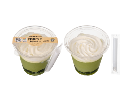
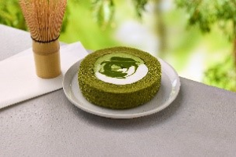
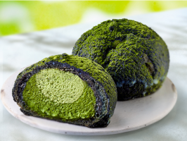
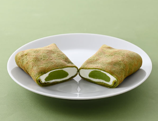
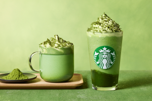
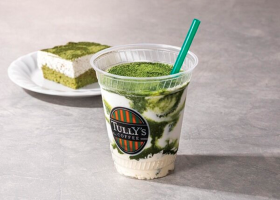
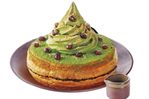
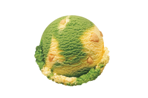
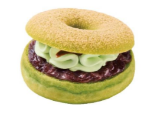
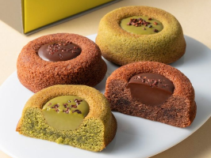

- トップ >
- 新作抹茶スイーツ
新作抹茶スイーツ
チェーン店ごとに登場する新作抹茶スイーツを、カテゴリ別に紹介します。
コンビニの新作抹茶スイーツ
コンビニでは季節限定の新作抹茶スイーツが次々登場します。手軽に買えるのに本格的な味わいが楽しめるのが魅力で、各コンビニごとに特徴が異なります。
セブンイレブン

まぜまぜスイーツ 抹茶ラテ わらびもち入り （税込429.84円）
ぷるぷる食感の抹茶わらびもちを敷き詰め、とろりとなめらかな抹茶ミルク、ふんわりとしたホイップクリームを重ねた、3層仕立てです。素材が心地よく溶け合うことで、抹茶の豊かな香りと旨みがミルクの甘みを引き立て、ぷるぷる食感とともに一体感のある味わいが楽しめる仕上がりです。
ローソン

Uchi Café ×森半 抹茶ミルクロールケーキ（税込 279円）
抹茶クリームとミルククリームを抹茶生地で巻き、仕上げに抹茶ソースをかけたロールケーキです。

Uchi Café ×森半 濃い抹茶クッキーシュー (税込 254円)
抹茶パウダー入りの抹茶カスタードホイップと、ミルク感のある抹茶ホイップクリームの2層仕立てのクッキーシュー。
ファミリーマート

ファミマ・ザ・クレープ 宇治抹茶 (税込 270円)
宇治抹茶を練りこんだクレープ皮で、生クリーム入りのホイップクリームと、宇治抹茶を使った抹茶チョコを包みました。
カフェの新作抹茶スイーツ
カフェでは季節限定の抹茶ラテやケーキなど、写真映えするメニューが多く登場します。お店ごとのこだわりが強く出るジャンルです。
スターバックス

『玉露抹茶 フラペチーノ®』 Tallサイズのみ ＜お持ち帰りの場合＞ (税込687円) ＜店内ご利用の場合＞ (税込700円)
『玉露抹茶 ラテ』 （Hot） Tallサイズのみ ＜お持ち帰りの場合＞ (税込638円) ＜店内ご利用の場合＞ (税込650円)
タリーズコーヒー

「抹茶ティラミスシェイク」 Tallサイズのみ(税込720円)
香り高い宇治抹茶とマスカルポーネホイップを使用し、“抹茶ティラミス”の味わいと見た目を表現しました。上品な宇治抹茶の風味と、マスカルポーネのミルキーなコクが重なり合う、まるで和スイーツのようなリッチで奥深い味わいをお楽しみいただけます。
コメダ珈琲店

「シロノワール 西尾の抹茶」通常サイズ （税込）960円～1,000円ミニサイズ （税込）730円～770円
特製抹茶あんを挟み、上から抹茶をふりかけた、西尾の抹茶を存分に楽しめる一品。お好みで、さらに抹茶蜜をかけてどうぞ。
スイーツ専門店・ドーナツ店の新作抹茶
スイーツ専門店では、抹茶を洋菓子に合わせた新作が多く登場します。抹茶のほろ苦さと甘さが絶妙に合わさった新しい抹茶スイーツが楽しめます。
サーティーワン

「抹茶ベイクドチーズケーキ」シングル・レギュラーサイズ (税込)420円
宇治抹茶アイスクリームに、ベイクドチーズケーキ風味アイスクリームを合わせ、砕いたバタークッキーでチーズケーキの土台部分を表現。ほろ苦い抹茶とコク深いチーズケーキがマッチした贅沢な味わいだ。
ミスタードーナツ

ドら抹茶 つぶあん華ホイップ ドら抹茶 栗あん抹茶ホイップ ＜テイクアウト＞(税込)334 円＜イートイン＞(税込)341 円
祇園辻利の宇治抹茶を練り込んだふわむち食感のドーナツ生地とサンドした北海道あずきあん、贅沢に絞った宇治抹茶ホイップを黒みつのアクセントとともにほおばる一品。
ゴディバ

「抹茶 ティグレ アソートメント」（4個入、8個入）4個入 (税込)2052円 / 8個入 (税込)3672円
しっとりリッチな「ショコラ」と、なめらかな「抹茶」、カカオの香り豊かにアレンジした2つのティグレが楽しめるアソートメントです。ショコラは口どけの柔らかさがポイントのガナッシュ。抹茶はやさしい甘さの中にほろ苦さがあり絶妙な味のハーモニー。味わいのコントラストと食べ比べの楽しさを一箱に。